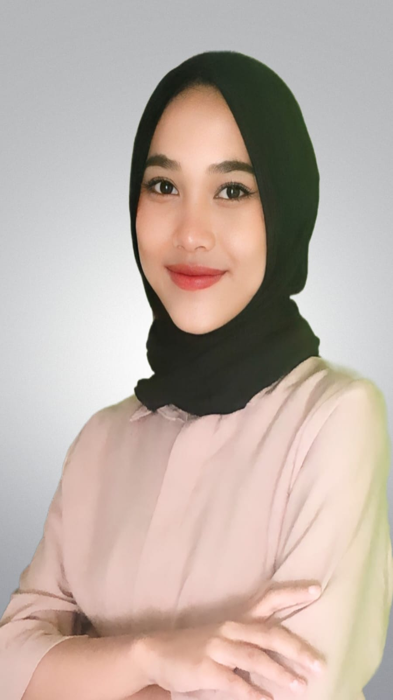

DESKRIPSI DIRI
Lulusan Jurusan Rekayasa Perangkat Lunak dari SMK Muhammadiyah 1 Cikampek. Saya memiliki pengalaman sebagai barista part-time di Starbucks selama satu tahun dan berhasil menciptakan resep minuman sendiri. Saya sangat senang bekerja dalam tim, berinteraksi dengan pelanggan, dan mengembangkan ide-ide baru di industri layanan dan F&B.


AAN NAWANGSIH
Barista | Customer Service | Developer
SEKOLAH
SMK Muhammadiyah 1 Cikampek (2020 - 2023)
Jurusan Rekayasa Perangkat Lunak, dengan nilai rata-rata 83.75
PENGALAMAN
Starbucks - Barista Part-time
April 2022 - April 2023- Meracik kopi dan minuman sesuai standar Starbucks.
- Menciptakan resep minuman baru yang diterima baik oleh pelanggan.
- Mengelola stok bahan baku dan menjaga kebersihan area kerja.
- Berinteraksi dengan pelanggan, memberikan layanan yang ramah dan profesional.
Simulasi Pembuatan Aplikasi Web
April 2022- Membuat rancangan arsitektur aplikasi berupa Data Flow Diagram.
- Merancang antarmuka aplikasi yang responsif dan intuitif (UI/UX).
- Melakukan pengolahan data untuk informasi pembayaran dan lainnya.
KEMAMPUAN
- Public Speaking: Kemampuan berkomunikasi dengan pelanggan secara fasih dan profesional.
- Software: Microsoft Word dan manajemen dokumen.
- Manajemen Waktu: Efisien dalam bekerja di bawah tekanan dan mengelola waktu.
- Kreativitas: Berpengalaman dalam menciptakan resep minuman baru di industri F&B.